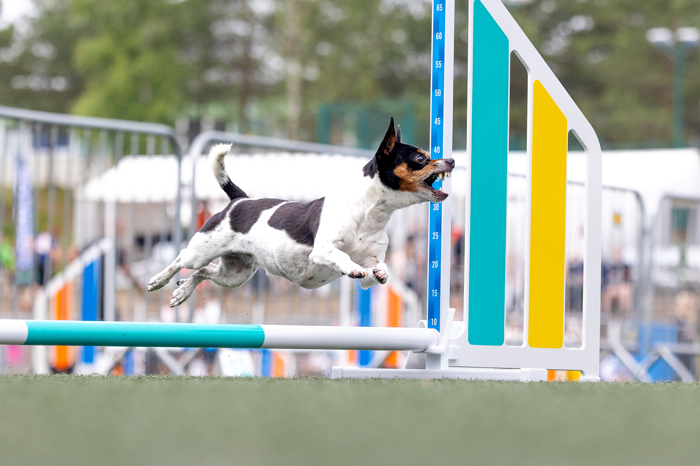
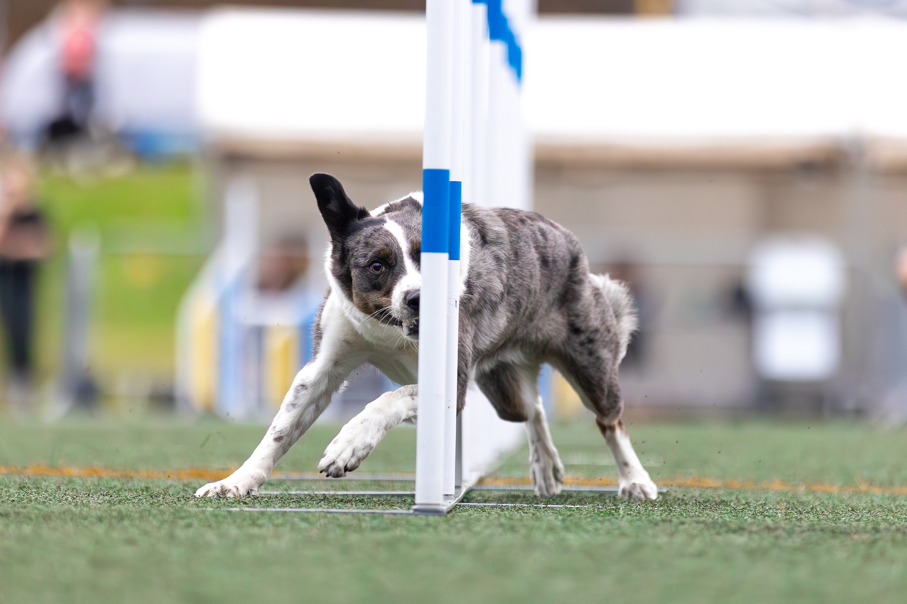
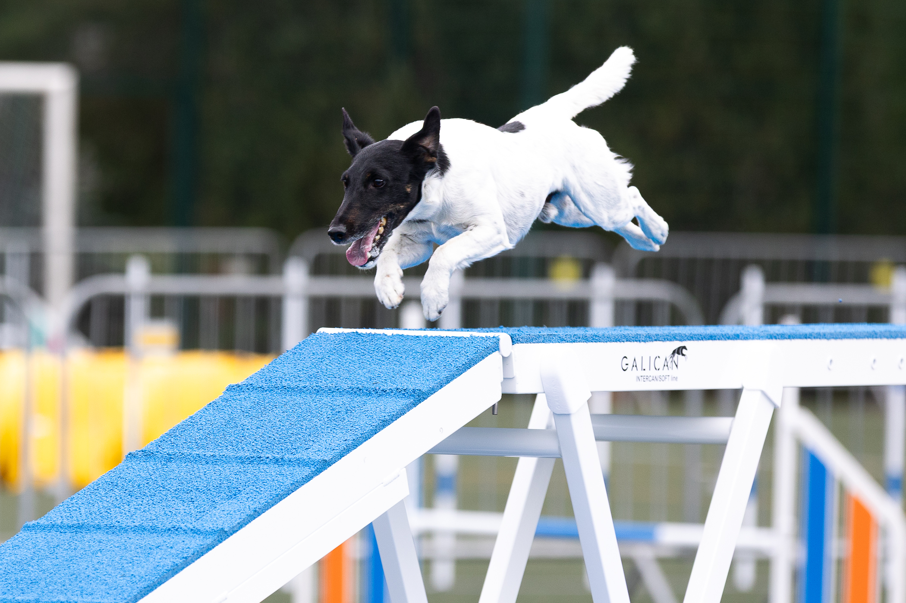
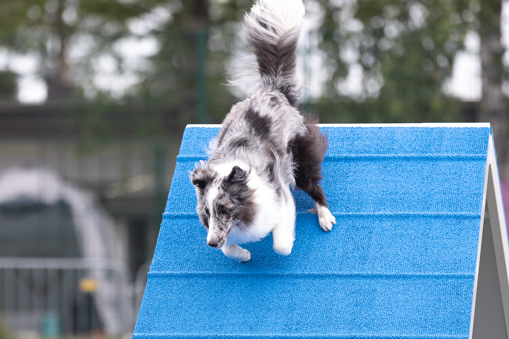

Adžiliti treniņi Zaķumuižā
Adžiliti ir kustība, azarts un daudz prieka kopā! Te Tu iemācīsies labāk saprast savu suni, pārvarēsi jaunus izaicinājumus un atklāsi, cik daudz jūs abi spējat paveikt kopā. Un galvenais - garlaicīgi nebūs ne Tev, ne sunim!
Uzzini vairāk

Nav obligāti jākļūst par sportistu!
Daži pie mums nāk ar sapni kādreiz startēt pasaules čempionātā. Citi vēlas, lai suns iemācās kaut ko jaunu, kļūst pārliecinātāks un kopā ar saimnieku aktīvi pavada laiku.
Abi varianti ir lieliski! Nav svarīgi, vai plāno piedalīties sacensībās vai trenēties tikai savam priekam. Galvenais ir vēlme darboties kopā ar suni.
Treniņos katrs pāris attīstās savā tempā, ņemot vērā suņa pieredzi, spējas un individuālās vajadzības.
Mazie soļi ved pie lieliem panākumiem
Adžiliti nav tikai skriešana pāri šķēršļiem. Suns mācās izprast saimnieka norādes, bet cilvēks — labāk saprast savu suni.
Sākam ar pamatiem un pakāpeniski apgūstam jaunus uzdevumus. Mācāmies pārvarēt šķēršļus, veidot dažādas kombinācijas un strādāt kā vienota komanda.
Treniņu sarežģītība tiek pielāgota katra pāra sagatavotībai un mērķiem.

Vēl ir jautājumi?
Tas ir pilnīgi normāli! Te atradīsi atbildes uz biežāk uzdotajiem jautājumiem par adžiliti treniņiem.
Ko darīt, ja man vai sunim adžiliti nepatiks?
Tieši tāpēc ir iespēja atnākt uz izmēģinājuma treniņu! Varēsi iepazīties ar adžiliti, kopā ar suni izmēģināt pirmos uzdevumus un saprast, vai jums abiem patīk un vai vēlaties turpināt.
Vai obligāti jāpiedalās sacensībās?
Nē, nepavisam! Daudzi cilvēki trenējas tikai savam priekam. Sacensības ir iespēja, nevis pienākums. Tu pats izvēlies, ko vēlies sasniegt.
Vai mans suns ir piemērots adžiliti?
Adžiliti var apgūt dažādu šķirņu un izmēru suņi. Svarīgi ir ņemt vērā suņa vecumu, veselību un fiziskās iespējas. Pirmajā tikšanās reizē varam pārrunāt, kādi uzdevumi būs piemēroti tieši Tavam sunim.
Vai sunim jau jāprot klausīt komandām?
Nav jāprot viss jau pirmajā dienā! Tomēr noderēs pamata sadarbības prasmes un iespēja motivēt suni ar kārumiem vai rotaļlietu. Pārējo apgūsim pakāpeniski.
Ko ņemt līdzi uz pirmo treniņu?
Paņem suņa iecienītākos kārumus, rotaļlietu, pavadu un ūdeni. Vēl noderēs ērti apavi un labs garastāvoklis!

Gribi pamēģināt?
Nav jāgaida ideālais brīdis vai īpaša sagatavotība. Sazinies ar mums, un vienosimies par iespēju iepazīties ar adžiliti!
Pieteikties treniņamVai zvani: +371 26730294